The Faculty is a center of innovation that bridges theory and practice. It aims to graduate creative professionals who can lead technological transformation in Palestine and the world.
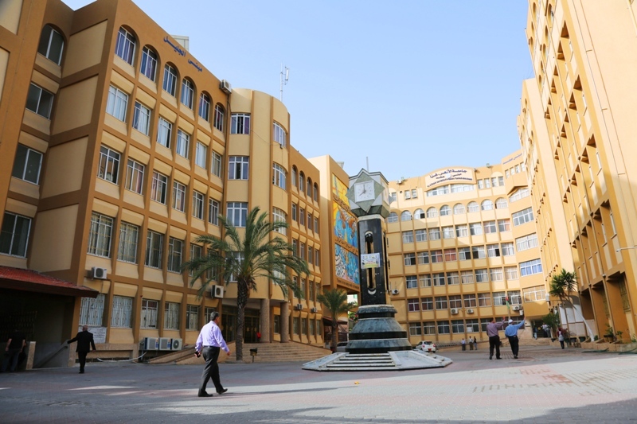
Focuses on the integration of hardware and software, including operating systems, computer architecture, and IoT.
Advantages:Versatile engineer who can work as Network Engineer, Cybersecurity Specialist, or Embedded Systems Designer.
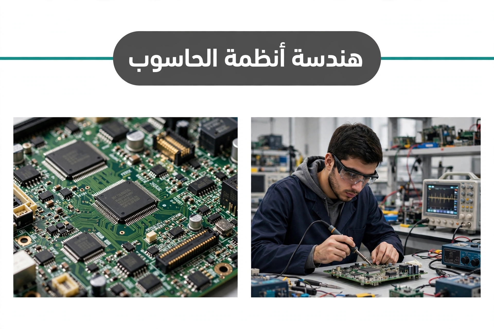
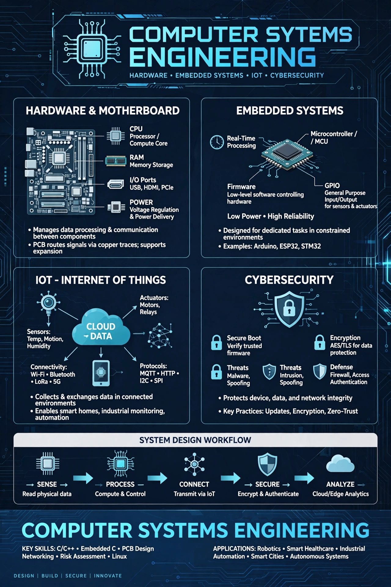
The science of intelligent machines. Combines mechanical engineering, electronics, control systems, and AI to build robots, CNC machines, and automated production lines.
Advantages:Key for modern factories and Industry 4.0, excellent salaries.
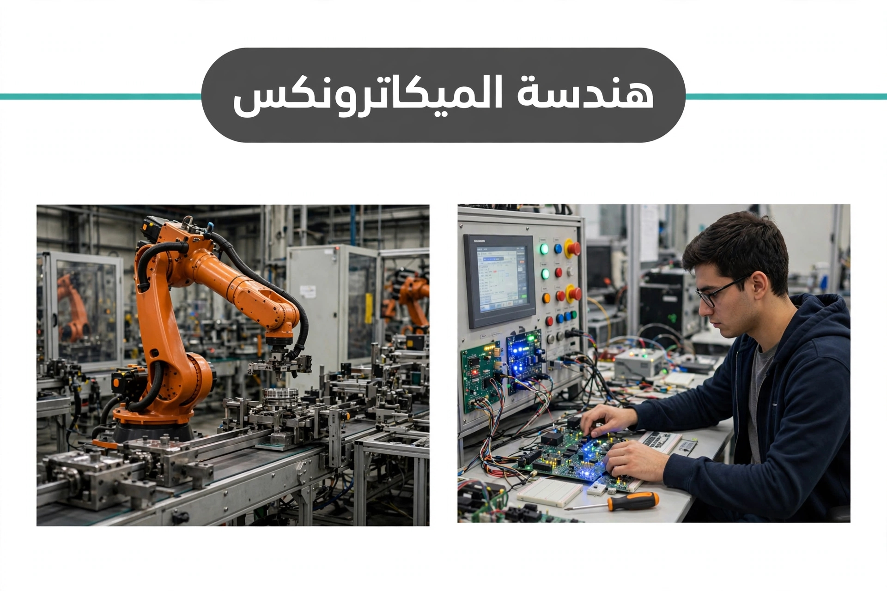
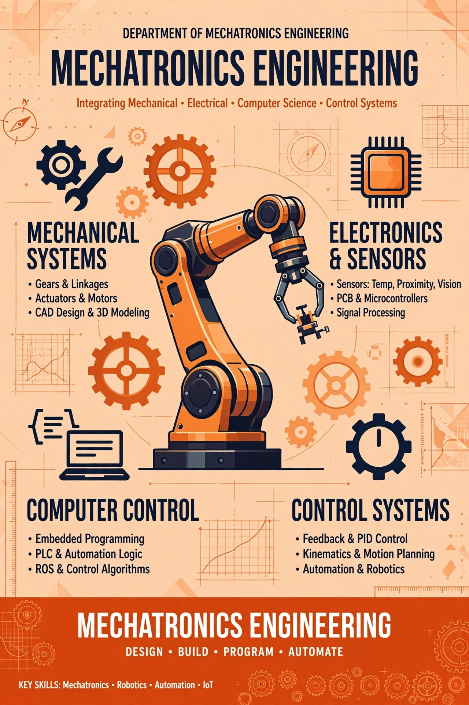
Students study human anatomy, electronics, and how to design, operate and maintain medical devices like X-ray, ECG, and ventilators.
Advantages: Works directly in hospitals and medical companies, humanitarian and highly respected job.
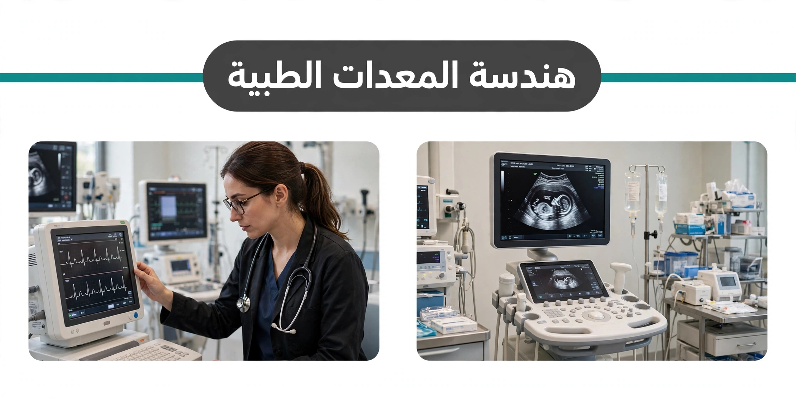
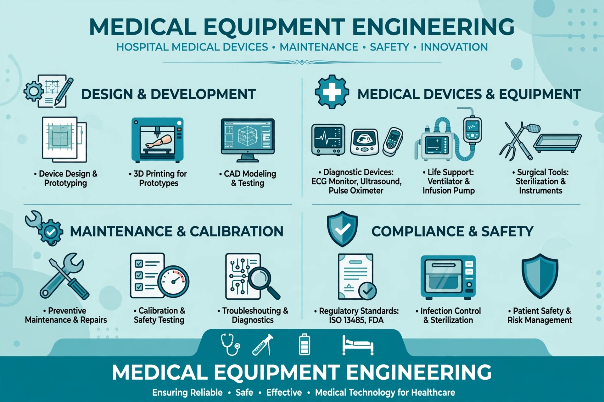
Focuses on designing solar power stations, wind turbines, and energy management systems to solve energy problems in Gaza.
Advantages:The most important specialty for Gaza's future, supported by international NGOs and solar companies.
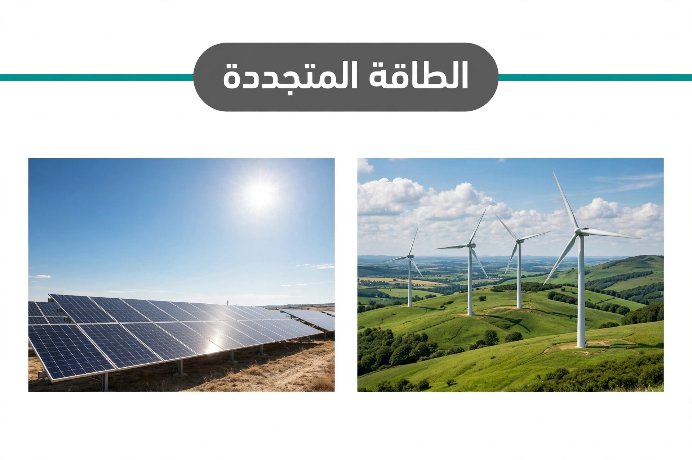
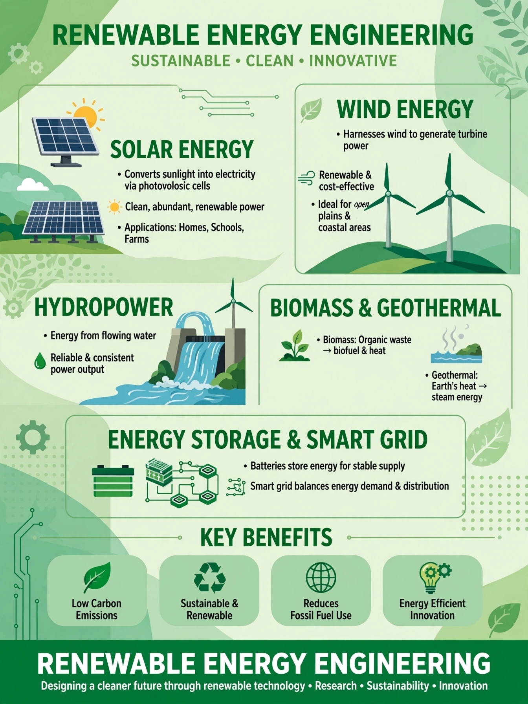
The most theoretical and deep major. Focuses on Algorithms, Artificial Intelligence, Machine Learning, and Data Science.
Advantages:The foundation for becoming an AI Engineer, Data Scientist, the highest-paid jobs globally
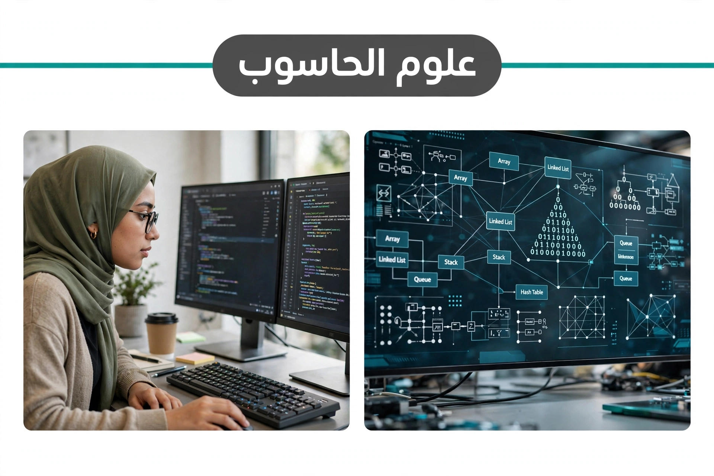
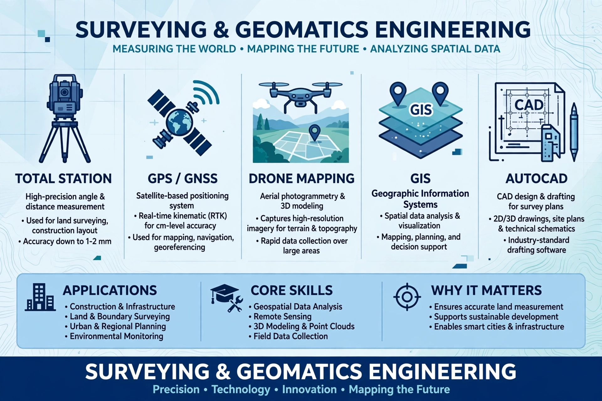
Combines art and technology. Students learn UI/UX design, 3D animation, video production, and game design using tools like Adobe Creative Suite and Blender
Advantages:High demand in marketing, media agencies, and freelance platforms.
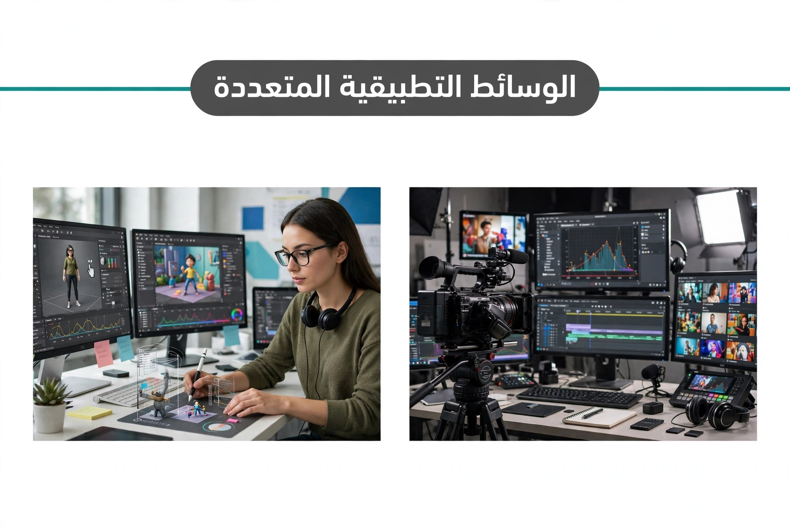
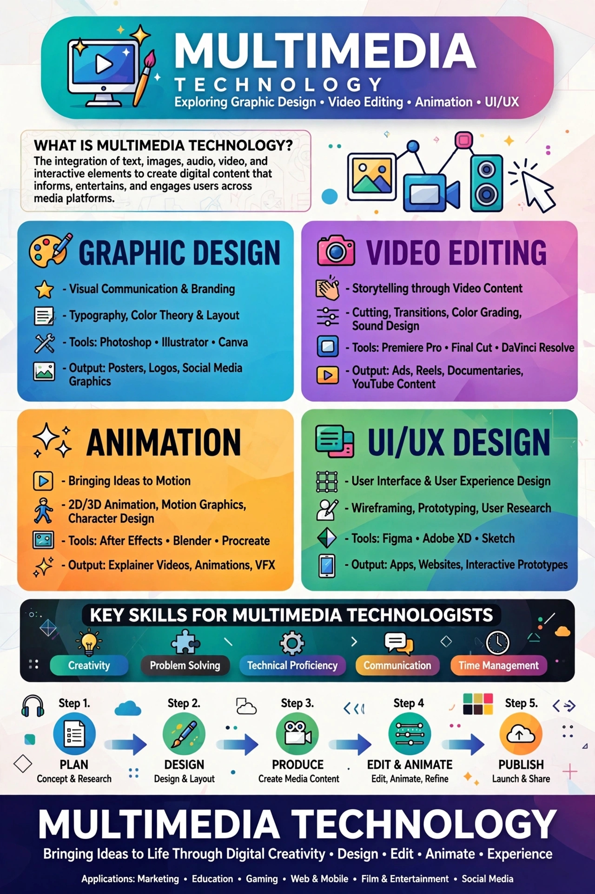